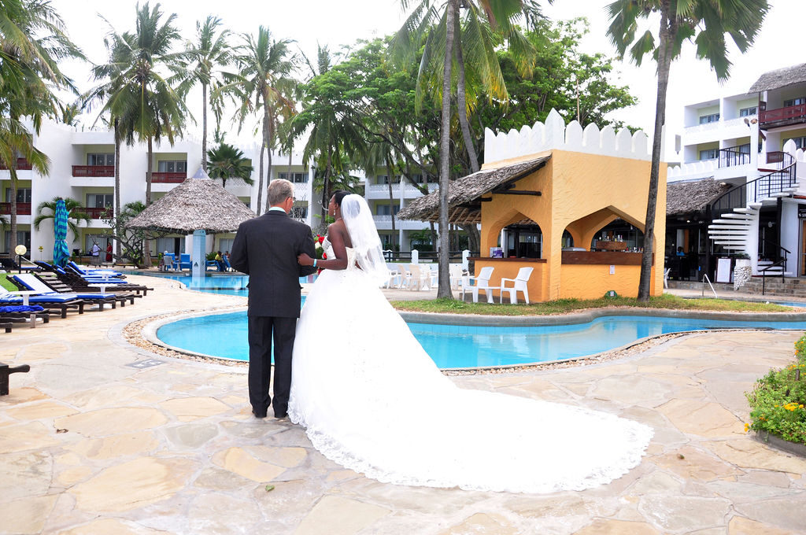
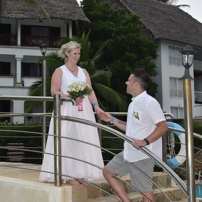

Wedding Photography
Elegant, unobtrusive coverage that turns your day's raw emotion into a visual heirloom across elite coastal shores.
ExploreCinematic Visual Storytelling from the Kenyan Coast
Wedding Photography • Videography • Graduation & Year-End Events
We blend creative precision with raw human emotion to deliver striking cinematic visual storytelling that elevates personal milestones and commercial productions.
Elegant, unobtrusive coverage that turns your day's raw emotion into a visual heirloom across elite coastal shores.
ExploreCinematic storytelling for high-profile events, moving brand productions, and campaigns delivered in flawless 4K.
ExploreMilestone photography that preserves academic achievement, organizational legacies, and celebratory energy in equal measure.
Explore



Projects Completed
Happy Clients
Years Experience
What Our Clients Say
Coast Photographic captured our wedding day in a way we didn't think was possible, every frame felt like a painting. We'll treasure these photographs forever.
— Benard Githingi & Njeri. Mombasa
Ready to begin?
Every moment deserves to be remembered. Reach out and let's talk about your vision.
Get In Touch